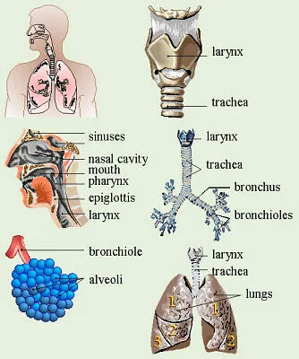
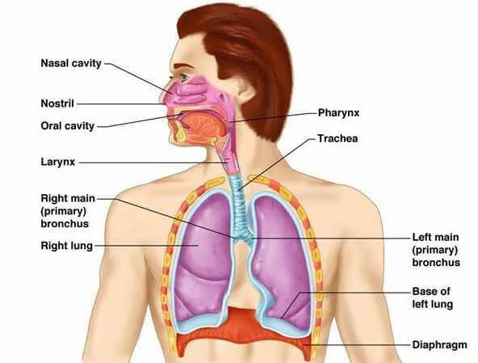
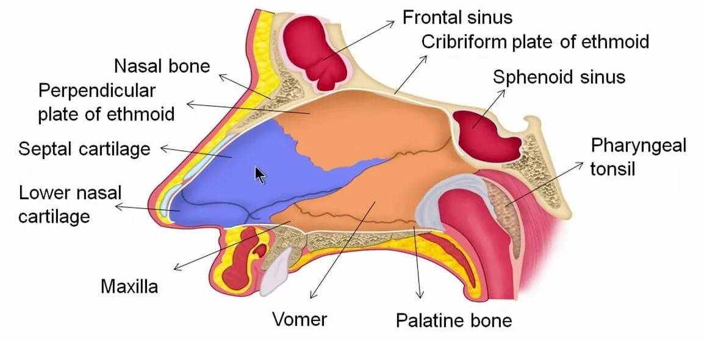
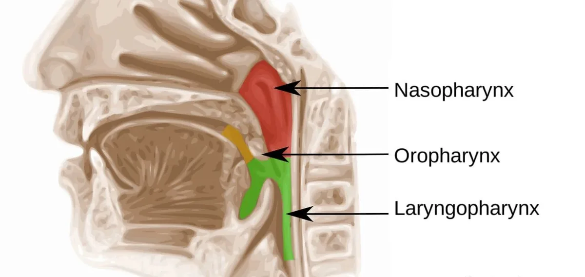
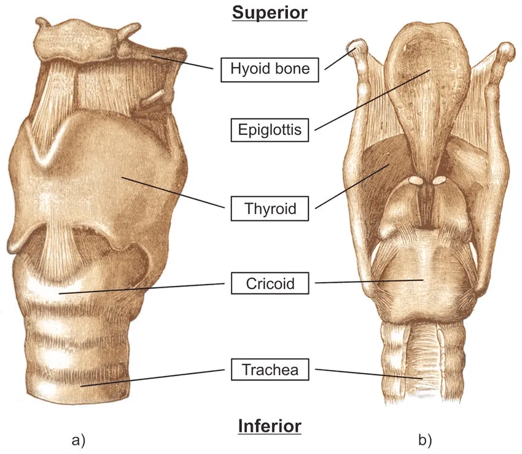
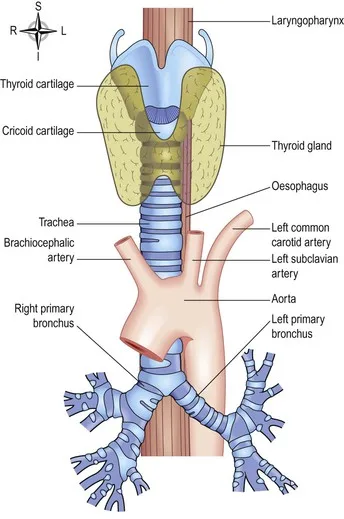
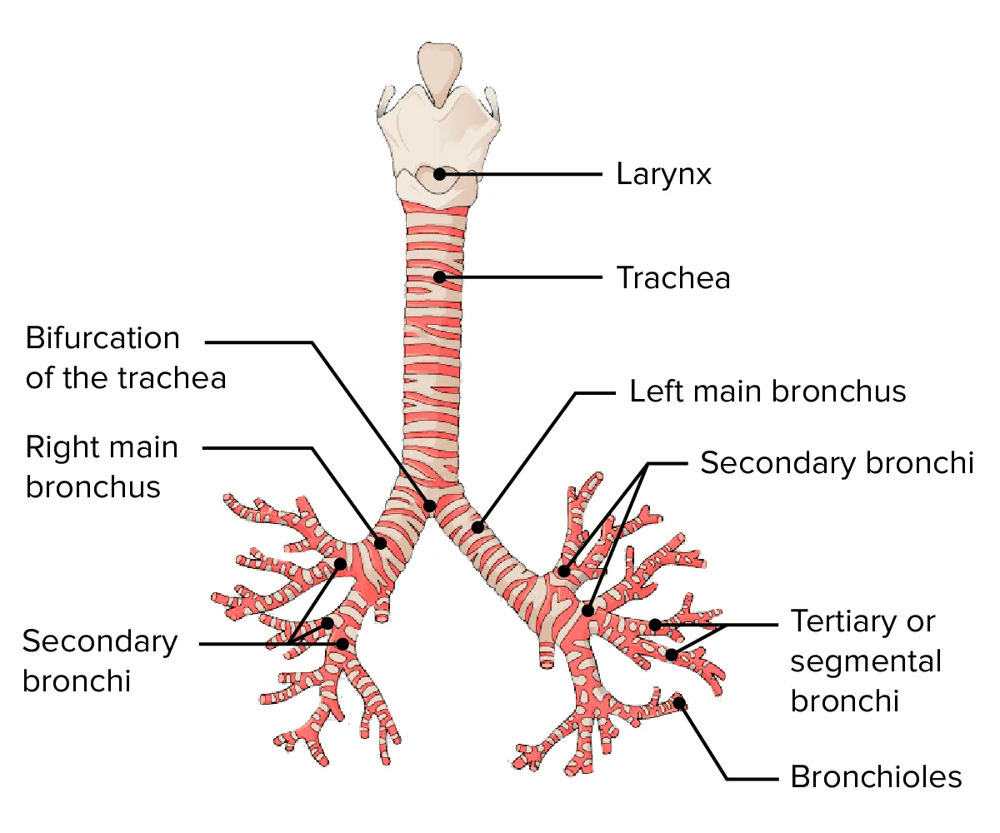
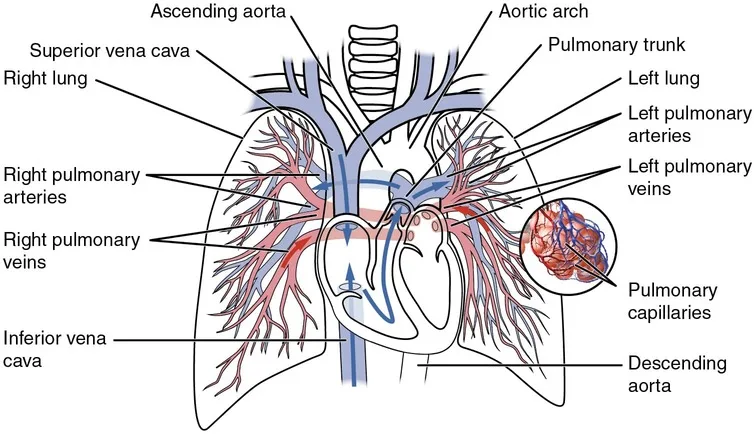

Expanded Nursing Uganda Explanation
The Respiratory system should be understood beyond a short definition. Link the concept to patient history, focused assessment, common risks, nursing priorities, documentation and evaluation of outcomes.
Contents — 43 sections (tap to expand)
01 Introduction to the Respiratory System
The respiratory system is a group of organs and tissues responsible for breathing. Its primary role is to provide a continuous supply of oxygen from the atmospheric air to the body's cells and to remove the waste product, carbon dioxide. This process is essential for cellular respiration, the metabolic process that generates ATP (energy) for all cellular activities.
The respiratory system is responsible for breathing (moving air in and out of the lungs) and exchanging gases (oxygen and carbon dioxide).
Function: To bring oxygen from the air into the body and remove carbon dioxide from the body. This gas exchange happens at the lungs and in the body tissues.
Main Parts: The system includes the passages that carry air and the organs where gas exchange takes place:
- The air passages (nose, pharynx, larynx, trachea, bronchi, bronchioles) – these are like the tubes air travels through.
- The lungs – where the important gas exchange happens.
- The pleura – the membranes covering the lungs.
- The muscles of breathing (diaphragm and intercostal muscles) – which help move air in and out.
Air Conditioning: The air we breathe from the environment can be cold, dry, dirty, or have different temperatures. As air travels through the air passages to the lungs, it is warmed or cooled to body temperature, moistened (saturated with water vapour), and filtered (cleaned) of dust, microbes, and other particles. This prepares the air before it reaches the delicate lungs.
02 Key Processes of Respiration:
The overall process of respiration involves four distinct events:
- Pulmonary Ventilation (Breathing): The mechanical process of moving air into and out of the lungs.
- External Respiration: The exchange of gases (oxygen and carbon dioxide) between the air in the alveoli of the lungs and the blood in the pulmonary capillaries.
- Transport of Respiratory Gases: The cardiovascular system transports oxygen from the lungs to the body tissues and carbon dioxide from the tissues back to the lungs.
- Internal Respiration: The exchange of gases between the blood in the systemic capillaries and the body's tissue cells.
03 Anatomy of the Respiratory System
The organs of the respiratory system are commonly divided into two tracts:
- Upper Respiratory Tract: Includes the nose, nasal cavity, pharynx, and associated structures.
- Lower Respiratory Tract: Includes the larynx, trachea, bronchi, and lungs.
04 The Nose and Nasal Cavity
The nose is the main route for air entry into the respiratory system.
Location: The nose is on the face, and the nasal cavity is a large space behind the nose, divided into two sides by a wall called the septum.
Structure: The nasal cavity is a large, irregular space divided into two equal passages by the nasal septum.
- Septum: The anterior part is made of hyaline cartilage, while the posterior bony part is formed by the vomer and the perpendicular plate of the ethmoid bone.
- Roof: Formed by the cribriform plate of the ethmoid bone and parts of the sphenoid, frontal, and nasal bones.
- Floor: Formed by the hard palate (composed of the maxilla and palatine bones) and the muscular soft palate.
- Walls: The lateral walls are formed by the maxilla, ethmoid bone, and the inferior nasal conchae. The medial wall is the septum.
- Conchae (or Turbinates): Three bony projections (superior, middle, and inferior) on each lateral wall that greatly increase the surface area and create turbulence in the inhaled air.
05 Functions of the Nose and Nasal Cavity:
- Warming: The nasal cavity is lined with a mucous membrane that has an immense blood supply (high vascularity). As air flows past, it is rapidly warmed. This high vascularity is also why nosebleeds (epistaxis) can result in significant blood loss.
- Filtering and Cleaning: Coarse hairs in the nostrils (anterior nares) trap larger particles. Smaller particles like dust and bacteria are trapped in the sticky mucus.
- Humidification: As air travels over the moist mucosal surface, it becomes saturated with water vapor, preventing the delicate lung tissues from drying out.
- Olfaction (Sense of Smell): The roof of the nasal cavity contains the olfactory epithelium, where receptors for the sense of smell are located.
- Protective Reflex: Irritation of the nasal mucosa triggers the sneeze reflex, a forceful expulsion of air to clear the passages of irritants.
- Passageway for air: Air enters through the nostrils (anterior nares) and passes through the nasal cavity to the back of the throat (pharynx).
06 The Pharynx (Throat)
The pharynx is a muscular tube, approximately 12-14 cm long, that serves as a passageway for both air and food. It extends from the base of the skull to the level of the 6th cervical vertebra.
Location: The tube at the back of the mouth and nasal cavity, extending down to the oesophagus and larynx.
Structure: Divided into three parts (nasopharynx, oropharynx, laryngopharynx). It has a lining that changes from ciliated (in the nasopharynx, continuous with the nose) to stratified squamous epithelium (in the oropharynx and laryngopharynx, continuous with the mouth) for protection from food. It contains muscle in its walls.
07 Divisions of the Pharynx:
- Nasopharynx: The superior portion, located directly behind the nasal cavity. It is an air-only passageway. The pharyngeal tonsils (adenoids) and the openings of the auditory (Eustachian) tubes are located here.
- Oropharynx: The middle portion, located behind the oral cavity. It is a common passageway for both food and air. The palatine tonsils are found on its lateral walls.
- Laryngopharynx: The inferior portion, extending from the epiglottis to the larynx. It is also a common passageway for food and air, and it is where the respiratory and digestive pathways diverge.
08 Functions of the Pharynx:
- Passageway for Air and Food: Directs air towards the larynx and food towards the esophagus.
- Warming and Humidifying: Continues the process started in the nasal cavity.
- Hearing: The auditory tubes open into the nasopharynx, allowing pressure to be equalized between the middle ear and the atmosphere, which is crucial for protecting the eardrum.
- Protection: The tonsils (lymphoid tissue) provide immune surveillance against inhaled or ingested pathogens.
- Speech: The pharynx acts as a resonating chamber, helping to give the voice its unique characteristics.
09 The Larynx (Voice Box)
The larynx is a complex cartilaginous structure that connects the pharynx to the trachea.
Location: Situated at the top of the trachea, in front of the pharynx.
Structure: Made up of several irregularly shaped cartilages joined by ligaments and membranes. The main cartilages are the thyroid cartilage (forms the Adam's apple, more prominent in males), cricoid cartilage, and arytenoid cartilages. A leaf-shaped cartilage called the epiglottis sits at the top. The inside is lined with ciliated columnar epithelium (except on the vocal cords).
- Thyroid Cartilage: The largest cartilage, made of hyaline cartilage. Its anterior projection forms the laryngeal prominence, commonly known as the Adam's apple , which is more prominent in males after puberty.
- Cricoid Cartilage: A ring-shaped hyaline cartilage located below the thyroid cartilage. It is the only complete ring of cartilage in the airway.
- Arytenoid Cartilages: Paired, pyramid-shaped hyaline cartilages that anchor the vocal cords.
- Epiglottis: A leaf-shaped elastic cartilage. During swallowing, the larynx moves superiorly, and the epiglottis tips down to cover the laryngeal opening, preventing food and drink from entering the trachea.
10 Vocal Cords:
The larynx contains two pairs of mucosal folds:
- True Vocal Cords (Vocal Folds): Vibrate as air is expelled from the lungs, producing sound.
- False Vocal Cords (Vestibular Folds): Superior to the true vocal cords; they do not produce sound but help close the glottis during swallowing.
11 Functions of the Larynx:
- Production of Sound (Phonation): Sound is produced when the true vocal cords vibrate. Pitch is controlled by the length and tension of the cords; volume is determined by the force of air passing over them; resonance is created by the pharynx, mouth, nasal cavity, and paranasal sinuses.
- Protection of the Lower Respiratory Tract: The epiglottis acts as a switching mechanism to route food and air into their proper channels.
- Passageway for Air: Provides an open (patent) airway between the pharynx and trachea.
- Air Conditioning: Continues to warm, filter, and humidify inspired air.
12 The Trachea (Windpipe)
The trachea is a flexible tube, about 10-12 cm long, that extends from the larynx into the mediastinum, where it divides into the two primary bronchi.
Structure: The wall of the trachea is composed of three layers and is supported by 16-20 C-shaped rings of hyaline cartilage.
- The cartilage rings are incomplete posteriorly, where the trachea lies against the esophagus. This allows the esophagus to expand as food is swallowed.
- The open posterior part is spanned by the trachealis muscle (smooth muscle) and connective tissue.
- Mucociliary Escalator: The inner lining of the trachea is ciliated columnar epithelium containing mucus-secreting goblet cells. The cilia beat continuously in an upward direction, propelling mucus loaded with debris toward the pharynx, where it can be swallowed or coughed out.
13 Functions of the Trachea:
- Support and Patency: The cartilage rings keep the trachea permanently open to allow the free passage of air.
- Mucociliary Escalator: Traps and removes particles from the airway.
- Cough Reflex: Nerve endings in the trachea are sensitive to irritation and can trigger a powerful cough to expel irritants.
- Air Conditioning: Continues warming, filtering, and humidifying air.
Functions related to respiration:
- Passageway for air: Carries air from the larynx to the bronchi.
- Support and Patency: The cartilage rings ensure the airway stays open.
- Mucociliary Escalator: The ciliated lining and mucus trap particles and sweep them upwards towards the larynx, where they are swallowed or coughed up. This is a very important cleaning mechanism.
- Cough Reflex: If the lining is irritated, it triggers a cough, which forcefully expels air and irritants from the airway.
- Warming, humidifying, and filtering: Continues air conditioning.
14 The Bronchi and the Bronchial Tree
The trachea divides at a point called the carina into the right and left primary bronchi.
Location: The trachea splits into two main tubes called primary bronchi (one to each lung). These then branch repeatedly into smaller and smaller tubes within the lungs, like branches of a tree.
Structure: As the airways branch and get smaller, their structure changes:
- The cartilage rings become smaller plates and eventually disappear in the smallest airways (bronchioles). Without cartilage, these smaller airways can change diameter.
- The amount of smooth muscle in the walls increases as cartilage decreases.
- The lining changes from ciliated columnar epithelium to non-ciliated epithelium in the smallest bronchioles.
Functions related to respiration:
- Passageway for air: Carry air from the trachea deep into the lungs.
- Control of Air Entry: The smooth muscle in the walls can contract (narrowing - bronchoconstriction) or relax (widening - bronchodilation), controlling how much air flows into the lungs. This is controlled by the nervous system.
- Protection: Mucociliary escalator (in larger bronchi) continues cleaning.
15 Primary Bronchi:
- Right Primary Bronchus: Wider, shorter, and more vertical than the left. As a result, inhaled foreign objects are more likely to become lodged in the right bronchus.
- Left Primary Bronchus: Longer, narrower, and more horizontal.
16 Respiratory Bronchioles and Alveoli:
Location: The smallest bronchioles lead to even tinier tubes called respiratory bronchioles, which end in clusters of air sacs called alveoli (singular: alveolus). These are the very small, delicate parts of the lungs.
Structure:
- Alveoli: Tiny, thin-walled sacs (like tiny balloons) where gas exchange happens. An adult lung has about 150 million alveoli, providing a huge surface area for gas exchange.
- Respiratory Membrane: The thin barrier between the air in the alveoli and the blood in the capillaries. It's made of the single cell layer of the alveolar wall and the single cell layer of the capillary wall, fused together. This very thin barrier (about 0.5 µm thick) is essential for quick gas diffusion.
- Surfactant: The lining of the alveoli is covered with a watery film. Special cells in the alveoli (septal cells) produce a substance called surfactant, which is a fat-protein mixture. Surfactant reduces the surface tension of the watery film, preventing the alveoli from collapsing completely between breaths and making it easier to inflate the lungs.
- Capillary Network: Each alveolus is surrounded by a dense network of tiny blood vessels called capillaries.
17 The Respiratory Zone: Alveoli
The respiratory zone is where gas exchange occurs. It consists of respiratory bronchioles, alveolar ducts, and alveoli (air sacs).
Alveoli: The primary sites of gas exchange. There are millions of alveoli in the lungs, providing an enormous surface area. They are surrounded by a dense network of pulmonary capillaries.
The Respiratory Membrane: A very thin (~0.5 µm) membrane that gases diffuse across. It consists of:
- The simple squamous epithelium of the alveolar wall (Type I pneumocytes).
- The fused basement membranes of the alveolar and capillary walls.
- The simple squamous endothelium of the capillary wall.
Surfactant: A detergent-like fluid secreted by Type II pneumocytes in the alveoli. It reduces the surface tension of the alveolar fluid, which is crucial for preventing the alveoli from collapsing during expiration.
18 The Bronchial Tree:
Upon entering the lungs at the hilum, the primary bronchi subdivide into a branching network of airways.
Primary Bronchi → Secondary (Lobar) Bronchi → Tertiary (Segmental) Bronchi → Bronchioles → Terminal Bronchioles.
19 Structural Changes Down the Tree:
- Cartilage: The amount of cartilage decreases, transitioning from rings to irregular plates, and is absent in the bronchioles.
- Smooth Muscle: The amount of smooth muscle increases relative to the diameter of the airway. This allows for the regulation of airflow (bronchodilation and bronchoconstriction).
- Epithelium: The lining changes from ciliated columnar to cuboidal epithelium, and goblet cells disappear in the smaller airways.
20 The Lungs and Pleura
The lungs are paired, cone-shaped organs that occupy most of the thoracic cavity.
Location: There are two lungs, one on each side of the chest, filling most of the thoracic cavity.
Structure: Each lung is divided into lobes (right lung has 3, left lung has 2). The lungs are made up of the air passages (bronchioles, respiratory bronchioles), alveoli, blood vessels, nerves, and connective tissue, all organised into small units called lobules.
Pleura: Each lung is enclosed by a double-layered membrane called the pleura. One layer sticks to the lung (visceral pleura), and the other layer sticks to the chest wall (parietal pleura). A small space between the layers (pleural cavity) contains pleural fluid. This fluid acts as a lubricant, allowing the lungs to glide smoothly against the chest wall during breathing. The fluid also helps keep the lung expanded by creating a negative pressure between the layers.
Pulmonary Blood Supply: The lungs receive blood from the heart through the pulmonary artery (carrying deoxygenated blood from the right ventricle). This artery branches extensively within the lungs, forming the capillary networks around the alveoli. Oxygenated blood returns to the heart through the pulmonary veins (entering the left atrium).
21 Gross Anatomy:
- Apex: The superior tip of the lung.
- Base: The inferior surface that rests on the diaphragm.
- Lobes: The right lung is larger and is divided into three lobes (superior, middle, inferior). The left lung is smaller to accommodate the heart (cardiac notch) and has only two lobes (superior, inferior).
- Hilum: An indentation on the medial surface where the primary bronchi, pulmonary blood vessels, lymphatic vessels, and nerves enter and leave the lung.
22 The Pleura:
The lungs are enclosed by a double-layered serous membrane called the pleura.
- Parietal Pleura: Lines the thoracic wall and the superior surface of the diaphragm.
- Visceral Pleura: Covers the external surface of the lungs.
- Pleural Cavity: A potential space between the two layers containing a thin film of pleural fluid. This fluid acts as a lubricant, allowing the lungs to glide smoothly during breathing, and creates surface tension that helps keep the lungs inflated.
23 Breathing (Pulmonary Ventilation):
The process of moving air into the lungs (inspiration) and out of the lungs (expiration). This happens because of changes in the volume and pressure inside the chest cavity, driven by the muscles of breathing. Air always flows from an area of higher pressure to an area of lower pressure.
Inspiration (Breathing In): This is an active process requiring muscle contraction. The main muscles are the diaphragm (a dome-shaped muscle below the lungs) and the external intercostal muscles (between the ribs).
- When the diaphragm contracts, it flattens and moves downwards.
- When the external intercostal muscles contract, they pull the rib cage upwards and outwards.
- These actions increase the volume of the chest cavity.
- Increasing the volume decreases the pressure inside the lungs (making it lower than the outside air pressure).
- Air flows into the lungs from the outside until the pressure equalizes.
Expiration (Breathing Out): In normal, quiet breathing, this is a passive process requiring muscle relaxation.
- The diaphragm and external intercostal muscles relax.
- The rib cage moves downwards and inwards, and the diaphragm moves upwards.
- This decreases the volume of the chest cavity.
- Decreasing the volume increases the pressure inside the lungs (making it higher than the outside air pressure).
- Air flows out of the lungs until the pressure equalizes.
Forced Breathing: During exercise or difficulty breathing, other muscles (accessory muscles) help increase the chest volume during inspiration and actively push air out during expiration (using internal intercostal and abdominal muscles).
24 Muscles of Respiration:
- Diaphragm: A dome-shaped muscle that forms the floor of the thoracic cavity. It is the primary muscle of inspiration.
- Intercostal Muscles: Muscles located between the ribs. External Intercostals: Elevate the rib cage during inspiration.
- Internal Intercostals: Depress the rib cage during forced expiration.
25 The Breathing Cycle:
- Inspiration (Inhalation): An active process. The diaphragm contracts and flattens, and the external intercostal muscles contract, lifting the rib cage up and out. This increases the volume of the thoracic cavity, which decreases the pressure inside the lungs. Air flows into the lungs, down its pressure gradient.
- Expiration (Exhalation): A passive process during quiet breathing. The diaphragm and external intercostals relax. The natural elasticity of the lungs causes them to recoil, decreasing the thoracic volume and increasing the pressure inside. Air flows out of the lungs. Forced expiration is an active process involving the internal intercostals and abdominal muscles.
26 Lung Volumes and Capacities
- Tidal Volume (TV): The amount of air inhaled or exhaled with each normal breath at rest (~500 mL).
- Inspiratory Reserve Volume (IRV): The extra volume of air that can be forcibly inhaled after a normal tidal inspiration.
- Expiratory Reserve Volume (ERV): The extra volume of air that can be forcibly exhaled after a normal tidal expiration.
- Residual Volume (RV): The volume of air that remains in the lungs even after a maximal exhalation. This keeps the alveoli open.
- Vital Capacity (VC): The maximum amount of air that can be exhaled after a maximal inhalation (VC = TV + IRV + ERV).
- Total Lung Capacity (TLC): The maximum amount of air the lungs can hold (TLC = VC + RV).
- Anatomical Dead Space: The volume of air that remains in the conducting airways (trachea, bronchi) and does not participate in gas exchange (~150 mL).
27 Gas Exchange (External and Internal Respiration)
This happens in two places:
External Respiration (at the Lungs): Exchange of gases between the air in the alveoli and the blood in the pulmonary capillaries.
- The partial pressure of oxygen (PO₂) in the alveoli is high, while in the deoxygenated blood arriving at the lungs, it is low. Therefore, oxygen diffuses from the alveoli into the blood.
- The partial pressure of carbon dioxide (PCO₂) in the deoxygenated blood is high, while in the alveoli, it is low. Therefore, carbon dioxide diffuses from the blood into the alveoli to be exhaled.
Simply
- Blood arriving at the lungs is low in oxygen and high in carbon dioxide.
- Oxygen moves from the air in the alveoli (where oxygen concentration is high) into the blood in the capillaries (where it's low) by diffusion.
- Carbon dioxide moves from the blood in the capillaries (where carbon dioxide concentration is high) into the air in the alveoli (where it's low) by diffusion.
- This exchange happens quickly across the very thin respiratory membrane.
Internal Respiration (at the Tissues): Exchange of gases between the blood in the systemic capillaries and the body tissues/cells.
- The PO₂ in the oxygenated blood arriving at the tissues is high, while in the tissue cells (which are using oxygen), it is low. Oxygen diffuses from the blood into the tissues.
- The PCO₂ in the tissue cells (where it is produced) is high, while in the blood, it is low. Carbon dioxide diffuses from the tissues into the blood.
Simply
- Blood arriving at the tissues is high in oxygen and low in carbon dioxide.
- Oxygen moves from the blood in the capillaries (where oxygen concentration is high) into the body tissues (where it's low) by diffusion.
- Carbon dioxide (a waste product of cell activity) moves from the body tissues (where carbon dioxide concentration is high) into the blood in the capillaries (where it's low) by diffusion.
28 Gas Transport in Blood (Transport of Gases in the Bloodstream)
- Oxygen: Mostly carried bound to haemoglobin inside red blood cells. A small amount is dissolved in plasma. Haemoglobin picks up oxygen in the lungs and releases it in the tissues where it is needed.
- Carbon Dioxide: Carried in the blood in three ways: mostly as bicarbonate ions in the plasma, some bound to haemoglobin, and a small amount dissolved in plasma. Carbon dioxide is picked up in the tissues and transported to the lungs to be breathed out.
29 Oxygen Transport:
- 98.5% is bound to hemoglobin (Hb) in red blood cells, forming oxyhemoglobin (HbO₂).
- 1.5% is dissolved in the plasma.
- The binding of oxygen to hemoglobin is reversible. Factors that promote the release (dissociation) of oxygen at the tissues include: low PO₂, high PCO₂, low pH (acidity), and high temperature.
30 Carbon Dioxide Transport:
- 70% is transported as bicarbonate ions (HCO₃⁻) in the plasma. This is the most important mechanism and plays a crucial role in buffering blood pH.
- 23% is bound to hemoglobin, forming carbaminohemoglobin.
- 7% is dissolved in the plasma.
31 Control of Respiration
Breathing is largely an involuntary process controlled by respiratory centers in the brainstem.
32 Neural Control:
- Medulla Oblongata: Contains the primary respiratory rhythmicity center that sets the basic pace and rhythm of breathing.
- Pons: Contains centers (pneumotaxic and apneustic) that modify and fine-tune the breathing rhythm.
33 Chemical Control (Chemoreceptors):
These receptors monitor chemical changes in the blood and cerebrospinal fluid (CSF) and send signals to the respiratory centers.
- Central Chemoreceptors: Located in the medulla, they are highly sensitive to changes in PCO₂ (and thus pH) of the CSF. An increase in PCO₂ is the most powerful stimulus for increasing the rate and depth of breathing.
- Peripheral Chemoreceptors: Located in the aortic arch and carotid arteries. They are sensitive to changes in blood PCO₂, pH, and, to a lesser extent, PO₂.
34 Regulation of Breathing(Control of Respiration)
Beyond the main neural centers and chemoreceptors, several other factors can influence the rate and depth of breathing.
Breathing is mostly an involuntary process controlled by the brain, but you can consciously control it sometimes (e.g., when speaking).
- The main control center is in the brainstem (medulla and pons), called the respiratory centre. It sends signals to the breathing muscles.
- Chemoreceptors in the brain and large arteries (aorta and carotid arteries) sense the levels of oxygen and carbon dioxide in the blood.
- If carbon dioxide levels rise or oxygen levels fall, these chemoreceptors send signals to the respiratory centre, telling it to increase the rate and depth of breathing to correct the levels. The body is very sensitive to changes in carbon dioxide levels.
35 Factors Influencing Respiration:
- Exercise: During physical activity, the body's demand for oxygen increases, and the production of carbon dioxide by exercising muscles rises significantly. This increased PCO₂ is a powerful stimulus for both central and peripheral chemoreceptors, leading to an increase in both the rate and depth of respiration to meet the metabolic needs of the muscles.
- Higher Brain Centers: Although breathing is largely involuntary, we have conscious control over it through the cerebral cortex. This allows for activities like: Speech and Singing: We intentionally manipulate our breathing patterns to produce sound.
- Emotional Displays: Strong emotions like crying, laughing, fear, or anxiety can significantly alter the breathing pattern via the limbic system and hypothalamus.
- Drugs: Certain substances can affect the respiratory centers. Sedatives, alcohol, and opioids (like morphine) can depress the respiratory center, leading to slower, shallower breathing.
- Body Temperature: The metabolic rate of the body is linked to temperature. In a fever (hyperthermia), metabolic rate increases, leading to increased respiration.
- In low body temperature (hypothermia), metabolic and respiratory rates are depressed.
- Other Reflexes: Activities like swallowing, sneezing, and coughing cause temporary changes in the respiratory pattern to protect the airways.
36 Consequences of Ageing on the Respiratory System:
- The elasticity of the lungs decreases, reducing their ability to recoil passively during expiration.
- The chest wall becomes more rigid, and respiratory muscles weaken, which can decrease the vital capacity.
- The sensitivity of chemoreceptors may decline.
- There is a higher risk of respiratory infections like pneumonia due to a less efficient mucociliary escalator and a decline in immune function.
37 Physiological Variables Affecting Breathing
For pulmonary ventilation to be effective, three key physical factors must be considered. These factors determine the effort required to breathe.
- Elasticity: This is the natural ability of the lung tissue to recoil, or return to its normal shape, after being stretched during inspiration. The elastic fibers in the lung's connective tissue are responsible for this property. Elastic recoil is the primary driving force behind quiet, passive expiration. Clinical Correlation: In diseases like emphysema, the elastic tissue is destroyed, leading to a loss of elasticity. This makes expiration difficult and requires muscular effort (forced expiration).
- Compliance: This is a measure of the "stretchability" of the lungs, or the ease with which the lungs and thoracic wall can be expanded. It describes the effort required to inflate the alveoli. High Compliance: Means the lungs stretch easily (like a well-used balloon).
- Low Compliance: Means the lungs resist expansion and require more effort to inflate (like a new, stiff balloon). Compliance can be decreased by conditions that make the lungs stiffer, such as pulmonary fibrosis (scarring) or a lack of surfactant.
- Airway Resistance: This is the friction or drag that air encounters as it flows through the respiratory passages. The diameter of the airways is the most important factor determining resistance. Bronchodilation: An increase in the diameter of the bronchioles (caused by sympathetic stimulation) decreases resistance and allows for greater airflow.
- Bronchoconstriction: A decrease in the diameter of the bronchioles (caused by parasympathetic stimulation, histamine, or irritants) increases resistance and makes breathing more difficult.
Clinical Correlation: In asthma, inflammation and bronchoconstriction dramatically increase airway resistance, leading to wheezing and difficulty breathing.
38 Ageing and the Respiratory System
As people get older, changes naturally occur in the respiratory system:
- The lungs become less elastic, making it harder to breathe out effectively. This can cause smaller airways to collapse.
- The rib cage becomes stiffer, and the breathing muscles may become weaker, reducing the amount of air that can be moved in and out of the lungs.
- The mucus production may decrease, and the cilia may become less effective at clearing mucus and particles, increasing the risk of infections.
- The reflexes (like coughing) may become less sensitive.
- The body's response to low oxygen or high carbon dioxide may become less efficient.
These changes can make older adults more prone to breathing problems and infections.
39 Common Deviations from Normal Structure and Function (Disorders)
When parts of the respiratory system are not working normally, it leads to symptoms like coughing, difficulty breathing (dyspnoea), wheezing, chest pain, and fever. Disorders can affect different parts of the system:
- Upper Respiratory Tract Infections: Common infections like the common cold (usually viral, causes runny nose, sore throat) and influenza (viral, more severe symptoms like fever, muscle pain). Can also include sinusitis (inflammation of sinuses) and tonsillitis (inflammation of tonsils).
- Laryngitis: Inflammation of the larynx, often causing hoarseness or loss of voice.
- Bronchitis: Inflammation of the bronchi. Can be acute (often follows a cold, with cough) or chronic (long-term, with persistent cough and mucus, often due to smoking). Chronic bronchitis involves increased mucus and narrowing airways.
- Emphysema: Damage to the walls of the alveoli, causing them to lose elasticity and break down. This reduces the surface area for gas exchange and makes it hard to breathe out, trapping air in the lungs. Often linked to smoking.
- Asthma: A condition where the airways (bronchioles) become inflamed and narrow temporarily (bronchoconstriction) in response to certain triggers (like allergens or cold air). This makes it difficult to breathe, causing wheezing and shortness of breath. It involves inflammation, increased mucus, and muscle tightening in the airways.
- Pneumonia: An infection of the alveoli in the lungs, where air sacs fill with fluid and pus, making gas exchange difficult. It can be caused by bacteria, viruses, or fungi.
- Tuberculosis (TB): A serious bacterial infection of the lungs (though it can affect other body parts). It is caused by Mycobacterium tuberculosis and leads to inflammation and damage in the lung tissue.
- Lung Collapse (Atelectasis): Occurs when a part of the lung (or the whole lung) deflates or collapses. Can be caused by a blockage in an airway (preventing air from reaching that part) or by air or fluid building up in the space outside the lung (pleural cavity), pushing on the lung.
- Pneumothorax: Air in the pleural cavity, causing the lung to collapse. Can happen spontaneously or due to injury.
- Pleural Effusion: Excess fluid in the pleural cavity, causing the lung to collapse. Can be due to heart failure, infection, or other conditions.
- Pneumoconioses: Lung diseases caused by inhaling dusts (like coal dust - coal worker's pneumoconiosis, or silica dust - silicosis) over a long time. Leads to inflammation and fibrosis (scarring) in the lungs, making them stiff and reducing lung function.
- Lung Tumours: Abnormal growths in the lung tissue. Can be benign (non-cancerous) or malignant (cancerous). Lung cancer is often linked to smoking and can grow locally or spread to other parts of the body.
These are just some examples of how the normal structure and function of the respiratory system can be affected, leading to different illnesses. Understanding the normal state helps us recognize when things deviate and a person needs care.
40 Nursing Uganda Clinical Lens
Use The Respiratory system as a practical nursing topic, not only a memorized definition. Start with normal structure and function, then connect it to assessment findings and disease.
- What to understand first: define the respiratory system, identify the normal or expected pattern, then explain what changes when the patient is unwell.
- Why it matters in care: the nurse must recognize risk early, explain findings clearly, document accurately and know when to escalate.
- How to revise it: connect each point to assessment, nursing diagnosis or care problem, intervention, rationale and evaluation.
41 Assessment Guide
- Relevant inspection, palpation, movement, auscultation, vital signs or neurological checks.
- Normal findings, abnormal findings and what each abnormality may indicate.
- Patient history, risk factors and how the body system affects other systems.
42 Nursing Priorities, Rationales and Outcomes
- Use anatomy to explain symptoms and guide focused assessment.
- Recognize findings that need urgent escalation.
- Teach the patient using simple body-system language.
The rationale for these priorities is patient safety: nursing actions should prevent deterioration, reduce discomfort, support recovery and create clear evidence for the next caregiver.
- Expected outcome: The learner can explain normal function, identify abnormal signs and connect them to nursing action.
43 Patient Teaching and Revision Check
- Explain the respiratory system in simple language the patient or caregiver can repeat back.
- Teach warning signs, medicine or follow-up instructions, hygiene or lifestyle points where relevant.
- For exams, prepare a short answer using: definition, causes or risk factors, signs, assessment, management, complications and prevention.
- For ward practice, document baseline findings, actions taken, patient response and the plan for review.
Illustrations and Diagrams (15)








7 more diagrams available — open the lesson for full illustrations.
Related Video Lectures
Watch nursing lecture videos on YouTube for this topic. Opens in a new tab.
Watch on YouTubeExternal link: YouTube may use its own cookies and terms. Nursing Uganda is not affiliated with YouTube.